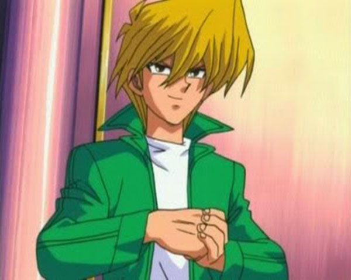

Deck Joey Wheeler
Reino dos Duelistas

Possuindo um deck com muitos monstros, Joey Wheeler demorou para aprender a usar cartas mágicas e armadilhas. Apenas após o treinamento com Solomon Muto, avô de Yugi, ele passou a focar mais em estratégia.
No reino dos duelistas, Joey é muito dependente do Mago do Tempo, carta que recebeu de seu amigo Yugi, e sempre usava seu efeito mágico para virar o jogo e assim conseguir a vitória.
Muitas das cartas receberam nomes diferentes com a tradução, principalmente na dublagem do anime. Nessa página as cartas seguem os nomes traduzidos do jogo real
Coloquei informações adicionais em algumas cartas. Elas estão sinalizadas pelo símbolo * e a informação adicional está após o mural de cartas.
Masaki, O Espadachim Lendário
Tigre de Machado
Kojikocy
Dragão Bebê
Mago do Tempo
Leogun
Armadilheiro de Pedra
Meotoko
Predador com Machado
Ogro de Rocha da Gruta #1
Guarda de Batalha do Pântano
Guarda de Batalha da Lava
Espada do Jacaré
Garoozis
Jovem Touro Guerreiro

Imperador Cruel

Dragão Negro de Olhos Vermelhos
O Combatente
Imitador

Antrossauro
Dragão Metálico Negro de Olhos Vermelhos
Golem Destruidor

Kagemusha da Chama Azul
Kageningen

Estende Garras
Perseguidor de Crânios
O Furioso Rei dos Mares
Guerreiro M n°1
Guerreiro M n°2
Dragão Milenar
Giltia, O Cavaleiro D.

Dragão Caveira Negro
Escudo e Espada
Salamandra

Unhas de Dragão
Kunai com Corrente
Buraco Armadilha com Espinhos
Ladrão de Tumbas
Buraco Armadilha
*Espadachim das Chamas e Giltia, O Cavaleiro D: no jogo real são monstros de fusão, mas no anime Joey os joga como monstros normais
*Dragão Caveira Negro: foi invocado na partida contra os irmãos Para e Dox. Yugi usou a carta de polimerização e fundiu seu Caveira Invocada com o Drgão Negro de Olhos Vermelhos de Joey.
*Dragão Metálico Negro de Olhos Vermelhos: foi invocado na partida contra Bandit Keith. Joey usou o monstro Imitador para copiar a carta Metalformo que estava no cemitério de Bandit Keith para transformar o Dragão Negro de Olhos Vermelhos no Dragão Metálico Negro de Olhos Vermelhos